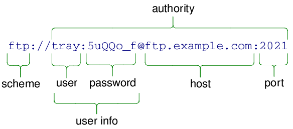
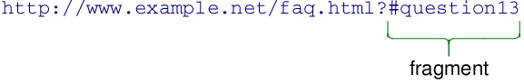

QUrl Class
The QUrl class provides a convenient interface for working with URLs. More...
| Header: | #include <QUrl> |
| CMake: | find_package(Qt6 REQUIRED COMPONENTS Core) target_link_libraries(mytarget PRIVATE Qt6::Core) |
| qmake: | QT += core |
- List of all members, including inherited members
- QUrl is part of Input/Output and Networking, Network Programming API, and Implicitly Shared Classes.
Note: All functions in this class are reentrant.
Public Types
(since 6.3) enum | AceProcessingOption { IgnoreIDNWhitelist, AceTransitionalProcessing } |
| flags | AceProcessingOptions |
| enum | ComponentFormattingOption { PrettyDecoded, EncodeSpaces, EncodeUnicode, EncodeDelimiters, EncodeReserved, …, FullyDecoded } |
| flags | ComponentFormattingOptions |
| flags | FormattingOptions |
| enum | ParsingMode { TolerantMode, StrictMode, DecodedMode } |
| enum | UrlFormattingOption { None, RemoveScheme, RemovePassword, RemoveUserInfo, RemovePort, …, NormalizePathSegments } |
| enum | UserInputResolutionOption { DefaultResolution, AssumeLocalFile } |
| flags | UserInputResolutionOptions |
Public Functions
| QUrl() | |
| QUrl(const QString &url, QUrl::ParsingMode parsingMode = TolerantMode) | |
| QUrl(const QUrl &other) | |
| QUrl(QUrl &&other) | |
| ~QUrl() | |
| QUrl | adjusted(QUrl::FormattingOptions options) const |
| QString | authority(QUrl::ComponentFormattingOptions options = PrettyDecoded) const |
| void | clear() |
| QString | errorString() const |
| QString | fileName(QUrl::ComponentFormattingOptions options = FullyDecoded) const |
| QString | fragment(QUrl::ComponentFormattingOptions options = PrettyDecoded) const |
| bool | hasFragment() const |
| bool | hasQuery() const |
| QString | host(QUrl::ComponentFormattingOptions options = FullyDecoded) const |
| bool | isEmpty() const |
| bool | isLocalFile() const |
| bool | isParentOf(const QUrl &childUrl) const |
| bool | isRelative() const |
| bool | isValid() const |
| bool | matches(const QUrl &url, QUrl::FormattingOptions options) const |
| QString | password(QUrl::ComponentFormattingOptions options = FullyDecoded) const |
| QString | path(QUrl::ComponentFormattingOptions options = FullyDecoded) const |
| int | port(int defaultPort = -1) const |
| QString | query(QUrl::ComponentFormattingOptions options = PrettyDecoded) const |
| QUrl | resolved(const QUrl &relative) const |
| QString | scheme() const |
| void | setAuthority(const QString &authority, QUrl::ParsingMode mode = TolerantMode) |
| void | setFragment(const QString &fragment, QUrl::ParsingMode mode = TolerantMode) |
| void | setHost(const QString &host, QUrl::ParsingMode mode = DecodedMode) |
| void | setPassword(const QString &password, QUrl::ParsingMode mode = DecodedMode) |
| void | setPath(const QString &path, QUrl::ParsingMode mode = DecodedMode) |
| void | setPort(int port) |
| void | setQuery(const QString &query, QUrl::ParsingMode mode = TolerantMode) |
| void | setQuery(const QUrlQuery &query) |
| void | setScheme(const QString &scheme) |
| void | setUrl(const QString &url, QUrl::ParsingMode parsingMode = TolerantMode) |
| void | setUserInfo(const QString &userInfo, QUrl::ParsingMode mode = TolerantMode) |
| void | setUserName(const QString &userName, QUrl::ParsingMode mode = DecodedMode) |
| void | swap(QUrl &other) |
| CFURLRef | toCFURL() const |
| QString | toDisplayString(QUrl::FormattingOptions options = FormattingOptions(PrettyDecoded)) const |
| QByteArray | toEncoded(QUrl::FormattingOptions options = FullyEncoded) const |
| QString | toLocalFile() const |
| NSURL * | toNSURL() const |
| QString | toString(QUrl::FormattingOptions options = FormattingOptions(PrettyDecoded)) const |
| QString | url(QUrl::FormattingOptions options = FormattingOptions(PrettyDecoded)) const |
| QString | userInfo(QUrl::ComponentFormattingOptions options = PrettyDecoded) const |
| QString | userName(QUrl::ComponentFormattingOptions options = FullyDecoded) const |
| bool | operator!=(const QUrl &url) const |
| QUrl & | operator=(const QUrl &url) |
| QUrl & | operator=(const QString &url) |
| QUrl & | operator=(QUrl &&other) |
| bool | operator==(const QUrl &url) const |
Static Public Members
(since 6.3) QString | fromAce(const QByteArray &domain, QUrl::AceProcessingOptions options = {}) |
| QUrl | fromCFURL(CFURLRef url) |
| QUrl | fromEncoded(QByteArrayView input, QUrl::ParsingMode mode = TolerantMode) |
| QUrl | fromLocalFile(const QString &localFile) |
| QUrl | fromNSURL(const NSURL *url) |
| QString | fromPercentEncoding(const QByteArray &input) |
| QList<QUrl> | fromStringList(const QStringList &urls, QUrl::ParsingMode mode = TolerantMode) |
| QUrl | fromUserInput(const QString &userInput, const QString &workingDirectory = QString(), QUrl::UserInputResolutionOptions options = DefaultResolution) |
| QStringList | idnWhitelist() |
| void | setIdnWhitelist(const QStringList &list) |
(since 6.3) QByteArray | toAce(const QString &domain, QUrl::AceProcessingOptions options = {}) |
| QByteArray | toPercentEncoding(const QString &input, const QByteArray &exclude = QByteArray(), const QByteArray &include = QByteArray()) |
| QStringList | toStringList(const QList<QUrl> &urls, QUrl::FormattingOptions options = FormattingOptions(PrettyDecoded)) |
Related Non-Members
| QDataStream & | operator<<(QDataStream &out, const QUrl &url) |
| QDataStream & | operator>>(QDataStream &in, QUrl &url) |
Macros
Detailed Description
It can parse and construct URLs in both encoded and unencoded form. QUrl also has support for internationalized domain names (IDNs).
The most common way to use QUrl is to initialize it via the constructor by passing a QString containing a full URL. QUrl objects can also be created from a QByteArray containing a full URL using QUrl::fromEncoded(), or heuristically from incomplete URLs using QUrl::fromUserInput(). The URL representation can be obtained from a QUrl using either QUrl::toString() or QUrl::toEncoded().
URLs can be represented in two forms: encoded or unencoded. The unencoded representation is suitable for showing to users, but the encoded representation is typically what you would send to a web server. For example, the unencoded URL "http://b√ºhler.example.com/List of applicants.xml" would be sent to the server as "http://xn–bhler-kva.example.com/List%20of%20applicants.xml".
A URL can also be constructed piece by piece by calling setScheme(), setUserName(), setPassword(), setHost(), setPort(), setPath(), setQuery() and setFragment(). Some convenience functions are also available: setAuthority() sets the user name, password, host and port. setUserInfo() sets the user name and password at once.
Call isValid() to check if the URL is valid. This can be done at any point during the constructing of a URL. If isValid() returns false, you should clear() the URL before proceeding, or start over by parsing a new URL with setUrl().
Constructing a query is particularly convenient through the use of the QUrlQuery class and its methods QUrlQuery::setQueryItems(), QUrlQuery::addQueryItem() and QUrlQuery::removeQueryItem(). Use QUrlQuery::setQueryDelimiters() to customize the delimiters used for generating the query string.
For the convenience of generating encoded URL strings or query strings, there are two static functions called fromPercentEncoding() and toPercentEncoding() which deal with percent encoding and decoding of QString objects.
fromLocalFile() constructs a QUrl by parsing a local file path. toLocalFile() converts a URL to a local file path.
The human readable representation of the URL is fetched with toString(). This representation is appropriate for displaying a URL to a user in unencoded form. The encoded form however, as returned by toEncoded(), is for internal use, passing to web servers, mail clients and so on. Both forms are technically correct and represent the same URL unambiguously – in fact, passing either form to QUrl's constructor or to setUrl() will yield the same QUrl object.
QUrl conforms to the URI specification from RFC 3986 (Uniform Resource Identifier: Generic Syntax), and includes scheme extensions from RFC 1738 (Uniform Resource Locators). Case folding rules in QUrl conform to RFC 3491 (Nameprep: A Stringprep Profile for Internationalized Domain Names (IDN)). It is also compatible with the file URI specification from freedesktop.org, provided that the locale encodes file names using UTF-8 (required by IDN).
Relative URLs vs Relative Paths
Calling isRelative() will return whether or not the URL is relative. A relative URL has no scheme. For example:
qDebug() << QUrl("main.qml").isRelative(); // true: no scheme
qDebug() << QUrl("qml/main.qml").isRelative(); // true: no scheme
qDebug() << QUrl("file:main.qml").isRelative(); // false: has "file" scheme
qDebug() << QUrl("file:qml/main.qml").isRelative(); // false: has "file" scheme
Notice that a URL can be absolute while containing a relative path, and vice versa:
// Absolute URL, relative path
QUrl url("file:file.txt");
qDebug() << url.isRelative(); // false: has "file" scheme
qDebug() << QDir::isAbsolutePath(url.path()); // false: relative path
// Relative URL, absolute path
url = QUrl("/home/user/file.txt");
qDebug() << url.isRelative(); // true: has no scheme
qDebug() << QDir::isAbsolutePath(url.path()); // true: absolute path
A relative URL can be resolved by passing it as an argument to resolved(), which returns an absolute URL. isParentOf() is used for determining whether one URL is a parent of another.
Error checking
QUrl is capable of detecting many errors in URLs while parsing it or when components of the URL are set with individual setter methods (like setScheme(), setHost() or setPath()). If the parsing or setter function is successful, any previously recorded error conditions will be discarded.
By default, QUrl setter methods operate in QUrl::TolerantMode, which means they accept some common mistakes and mis-representation of data. An alternate method of parsing is QUrl::StrictMode, which applies further checks. See QUrl::ParsingMode for a description of the difference of the parsing modes.
QUrl only checks for conformance with the URL specification. It does not try to verify that high-level protocol URLs are in the format they are expected to be by handlers elsewhere. For example, the following URIs are all considered valid by QUrl, even if they do not make sense when used:
- "http:/filename.html"
- "mailto://example.com"
When the parser encounters an error, it signals the event by making isValid() return false and toString() / toEncoded() return an empty string. If it is necessary to show the user the reason why the URL failed to parse, the error condition can be obtained from QUrl by calling errorString(). Note that this message is highly technical and may not make sense to end-users.
QUrl is capable of recording only one error condition. If more than one error is found, it is undefined which error is reported.
Character Conversions
Follow these rules to avoid erroneous character conversion when dealing with URLs and strings:
- When creating a QString to contain a URL from a QByteArray or a char*, always use QString::fromUtf8().
Member Type Documentation
[since 6.3] enum QUrl::AceProcessingOption
flags QUrl::AceProcessingOptions
The ACE processing options control the way URLs are transformed to and from ASCII-Compatible Encoding.
| Constant | Value | Description |
|---|---|---|
QUrl::IgnoreIDNWhitelist | 0x1 | Ignore the IDN whitelist when converting URLs to Unicode. |
QUrl::AceTransitionalProcessing | 0x2 | Use transitional processing described in UTS #46. This allows better compatibility with IDNA 2003 specification. |
The default is to use nontransitional processing and to allow non-ASCII characters only inside URLs whose top-level domains are listed in the IDN whitelist.
This enum was introduced in Qt 6.3.
The AceProcessingOptions type is a typedef for QFlags<AceProcessingOption>. It stores an OR combination of AceProcessingOption values.
See also toAce(), fromAce(), and idnWhitelist().
enum QUrl::ComponentFormattingOption
flags QUrl::ComponentFormattingOptions
The component formatting options define how the components of an URL will be formatted when written out as text. They can be combined with the options from QUrl::FormattingOptions when used in toString() and toEncoded().
| Constant | Value | Description |
|---|---|---|
QUrl::PrettyDecoded | 0x000000 | The component is returned in a "pretty form", with most percent-encoded characters decoded. The exact behavior of PrettyDecoded varies from component to component and may also change from Qt release to Qt release. This is the default. |
QUrl::EncodeSpaces | 0x100000 | Leave space characters in their encoded form ("%20"). |
QUrl::EncodeUnicode | 0x200000 | Leave non-US-ASCII characters encoded in their UTF-8 percent-encoded form (e.g., "%C3%A9" for the U+00E9 codepoint, LATIN SMALL LETTER E WITH ACUTE). |
QUrl::EncodeDelimiters | 0x400000 | 0x800000 | Leave certain delimiters in their encoded form, as would appear in the URL when the full URL is represented as text. The delimiters are affected by this option change from component to component. This flag has no effect in toString() or toEncoded(). |
QUrl::EncodeReserved | 0x1000000 | Leave US-ASCII characters not permitted in the URL by the specification in their encoded form. This is the default on toString() and toEncoded(). |
QUrl::DecodeReserved | 0x2000000 | Decode the US-ASCII characters that the URL specification does not allow to appear in the URL. This is the default on the getters of individual components. |
QUrl::FullyEncoded | EncodeSpaces | EncodeUnicode | EncodeDelimiters | EncodeReserved | Leave all characters in their properly-encoded form, as this component would appear as part of a URL. When used with toString(), this produces a fully-compliant URL in QString form, exactly equal to the result of toEncoded() |
QUrl::FullyDecoded | FullyEncoded | DecodeReserved | 0x4000000 | Attempt to decode as much as possible. For individual components of the URL, this decodes every percent encoding sequence, including control characters (U+0000 to U+001F) and UTF-8 sequences found in percent-encoded form. Use of this mode may cause data loss, see below for more information. |
The values of EncodeReserved and DecodeReserved should not be used together in one call. The behavior is undefined if that happens. They are provided as separate values because the behavior of the "pretty mode" with regards to reserved characters is different on certain components and specially on the full URL.
Full decoding
The FullyDecoded mode is similar to the behavior of the functions returning QString in Qt 4.x, in that every character represents itself and never has any special meaning. This is true even for the percent character ('%'), which should be interpreted to mean a literal percent, not the beginning of a percent-encoded sequence. The same actual character, in all other decoding modes, is represented by the sequence "%25".
Whenever re-applying data obtained with QUrl::FullyDecoded into a QUrl, care must be taken to use the QUrl::DecodedMode parameter to the setters (like setPath() and setUserName()). Failure to do so may cause re-interpretation of the percent character ('%') as the beginning of a percent-encoded sequence.
This mode is quite useful when portions of a URL are used in a non-URL context. For example, to extract the username, password or file paths in an FTP client application, the FullyDecoded mode should be used.
This mode should be used with care, since there are two conditions that cannot be reliably represented in the returned QString. They are:
- Non-UTF-8 sequences: URLs may contain sequences of percent-encoded characters that do not form valid UTF-8 sequences. Since URLs need to be decoded using UTF-8, any decoder failure will result in the QString containing one or more replacement characters where the sequence existed.
- Encoded delimiters: URLs are also allowed to make a distinction between a delimiter found in its literal form and its equivalent in percent-encoded form. This is most commonly found in the query, but is permitted in most parts of the URL.
The following example illustrates the problem:
QUrl original("http://example.com/?q=a%2B%3Db%26c");
QUrl copy(original);
copy.setQuery(copy.query(QUrl::FullyDecoded), QUrl::DecodedMode);
qDebug() << original.toString(); // prints: http://example.com/?q=a%2B%3Db%26c
qDebug() << copy.toString(); // prints: http://example.com/?q=a+=b&c
If the two URLs were used via HTTP GET, the interpretation by the web server would probably be different. In the first case, it would interpret as one parameter, with a key of "q" and value "a+=b&c". In the second case, it would probably interpret as two parameters, one with a key of "q" and value "a =b", and the second with a key "c" and no value.
The ComponentFormattingOptions type is a typedef for QFlags<ComponentFormattingOption>. It stores an OR combination of ComponentFormattingOption values.
See also QUrl::FormattingOptions.
enum QUrl::ParsingMode
The parsing mode controls the way QUrl parses strings.
| Constant | Value | Description |
|---|---|---|
QUrl::TolerantMode | 0 | QUrl will try to correct some common errors in URLs. This mode is useful for parsing URLs coming from sources not known to be strictly standards-conforming. |
QUrl::StrictMode | 1 | Only valid URLs are accepted. This mode is useful for general URL validation. |
QUrl::DecodedMode | 2 | QUrl will interpret the URL component in the fully-decoded form, where percent characters stand for themselves, not as the beginning of a percent-encoded sequence. This mode is only valid for the setters setting components of a URL; it is not permitted in the QUrl constructor, in fromEncoded() or in setUrl(). For more information on this mode, see the documentation for QUrl::FullyDecoded. |
In TolerantMode, the parser has the following behaviour:
- Spaces and "%20": unencoded space characters will be accepted and will be treated as equivalent to "%20".
- Single "%" characters: Any occurrences of a percent character "%" not followed by exactly two hexadecimal characters (e.g., "13% coverage.html") will be replaced by "%25". Note that one lone "%" character will trigger the correction mode for all percent characters.
- Reserved and unreserved characters: An encoded URL should only contain a few characters as literals; all other characters should be percent-encoded. In TolerantMode, these characters will be accepted if they are found in the URL: space / double-quote / "<" / ">" / "" / "^" / "`" / "{" / "|" / "}" Those same characters can be decoded again by passing QUrl::DecodeReserved to toString() or toEncoded(). In the getters of individual components, those characters are often returned in decoded form.
When in StrictMode, if a parsing error is found, isValid() will return false and errorString() will return a message describing the error. If more than one error is detected, it is undefined which error gets reported.
Note that TolerantMode is not usually enough for parsing user input, which often contains more errors and expectations than the parser can deal with. When dealing with data coming directly from the user – as opposed to data coming from data-transfer sources, such as other programs – it is recommended to use fromUserInput().
See also fromUserInput(), setUrl(), toString(), toEncoded(), and QUrl::FormattingOptions.
enum QUrl::UrlFormattingOption
flags QUrl::FormattingOptions
The formatting options define how the URL is formatted when written out as text.
| Constant | Value | Description |
|---|---|---|
QUrl::None | 0x0 | The format of the URL is unchanged. |
QUrl::RemoveScheme | 0x1 | The scheme is removed from the URL. |
QUrl::RemovePassword | 0x2 | Any password in the URL is removed. |
QUrl::RemoveUserInfo | RemovePassword | 0x4 | Any user information in the URL is removed. |
QUrl::RemovePort | 0x8 | Any specified port is removed from the URL. |
QUrl::RemoveAuthority | RemoveUserInfo | RemovePort | 0x10 | |
QUrl::RemovePath | 0x20 | The URL's path is removed, leaving only the scheme, host address, and port (if present). |
QUrl::RemoveQuery | 0x40 | The query part of the URL (following a '?' character) is removed. |
QUrl::RemoveFragment | 0x80 | |
QUrl::RemoveFilename | 0x800 | The filename (i.e. everything after the last '/' in the path) is removed. The trailing '/' is kept, unless StripTrailingSlash is set. Only valid if RemovePath is not set. |
QUrl::PreferLocalFile | 0x200 | If the URL is a local file according to isLocalFile() and contains no query or fragment, a local file path is returned. |
QUrl::StripTrailingSlash | 0x400 | The trailing slash is removed from the path, if one is present. |
QUrl::NormalizePathSegments | 0x1000 | Modifies the path to remove redundant directory separators, and to resolve "."s and ".."s (as far as possible). For non-local paths, adjacent slashes are preserved. |
Note that the case folding rules in Nameprep, which QUrl conforms to, require host names to always be converted to lower case, regardless of the Qt::FormattingOptions used.
The options from QUrl::ComponentFormattingOptions are also possible.
The FormattingOptions type is a typedef for QFlags<UrlFormattingOption>. It stores an OR combination of UrlFormattingOption values.
See also QUrl::ComponentFormattingOptions.
enum QUrl::UserInputResolutionOption
flags QUrl::UserInputResolutionOptions
The user input resolution options define how fromUserInput() should interpret strings that could either be a relative path or the short form of a HTTP URL. For instance file.pl can be either a local file or the URL http://file.pl.
| Constant | Value | Description |
|---|---|---|
QUrl::DefaultResolution | 0 | The default resolution mechanism is to check whether a local file exists, in the working directory given to fromUserInput, and only return a local path in that case. Otherwise a URL is assumed. |
QUrl::AssumeLocalFile | 1 | This option makes fromUserInput() always return a local path unless the input contains a scheme, such as http://file.pl. This is useful for applications such as text editors, which are able to create the file if it doesn't exist. |
The UserInputResolutionOptions type is a typedef for QFlags<UserInputResolutionOption>. It stores an OR combination of UserInputResolutionOption values.
See also fromUserInput().
Member Function Documentation
QUrl::QUrl()
Constructs an empty QUrl object.
QUrl::QUrl(const QString &url, QUrl::ParsingMode parsingMode = TolerantMode)
Constructs a URL by parsing url. Note this constructor expects a proper URL or URL-Reference and will not attempt to guess intent. For example, the following declaration:
QUrl url("example.com");
Will construct a valid URL but it may not be what one expects, as the scheme() part of the input is missing. For a string like the above, applications may want to use fromUserInput(). For this constructor or setUrl(), the following is probably what was intended:
QUrl url("https://example.com");
QUrl will automatically percent encode all characters that are not allowed in a URL and decode the percent-encoded sequences that represent an unreserved character (letters, digits, hyphens, underscores, dots and tildes). All other characters are left in their original forms.
Parses the url using the parser mode parsingMode. In TolerantMode (the default), QUrl will correct certain mistakes, notably the presence of a percent character ('%') not followed by two hexadecimal digits, and it will accept any character in any position. In StrictMode, encoding mistakes will not be tolerated and QUrl will also check that certain forbidden characters are not present in unencoded form. If an error is detected in StrictMode, isValid() will return false. The parsing mode DecodedMode is not permitted in this context.
Example:
QUrl url("http://www.example.com/List of holidays.xml"); // url.toEncoded() == "http://www.example.com/List%20of%20holidays.xml"
To construct a URL from an encoded string, you can also use fromEncoded():
QUrl url = QUrl::fromEncoded("http://qt-project.org/List%20of%20holidays.xml");
Both functions are equivalent and, in Qt 5, both functions accept encoded data. Usually, the choice of the QUrl constructor or setUrl() versus fromEncoded() will depend on the source data: the constructor and setUrl() take a QString, whereas fromEncoded takes a QByteArray.
See also setUrl(), fromEncoded(), and TolerantMode.
[noexcept] QUrl::QUrl(const QUrl &other)
Constructs a copy of other.
[noexcept] QUrl::QUrl(QUrl &&other)
Move-constructs a QUrl instance, making it point at the same object that other was pointing to.
[noexcept] QUrl::~QUrl()
Destructor; called immediately before the object is deleted.
QUrl QUrl::adjusted(QUrl::FormattingOptions options) const
Returns an adjusted version of the URL. The output can be customized by passing flags with options.
The encoding options from QUrl::ComponentFormattingOption don't make much sense for this method, nor does QUrl::PreferLocalFile.
This is always equivalent to QUrl(url.toString(options)).
See also FormattingOptions, toEncoded(), and toString().
QString QUrl::authority(QUrl::ComponentFormattingOptions options = PrettyDecoded) const
Returns the authority of the URL if it is defined; otherwise an empty string is returned.
This function returns an unambiguous value, which may contain that characters still percent-encoded, plus some control sequences not representable in decoded form in QString.
The options argument controls how to format the user info component. The value of QUrl::FullyDecoded is not permitted in this function. If you need to obtain fully decoded data, call userName(), password(), host() and port() individually.
See also setAuthority(), userInfo(), userName(), password(), host(), and port().
void QUrl::clear()
Resets the content of the QUrl. After calling this function, the QUrl is equal to one that has been constructed with the default empty constructor.
See also isEmpty().
QString QUrl::errorString() const
Returns an error message if the last operation that modified this QUrl object ran into a parsing error. If no error was detected, this function returns an empty string and isValid() returns true.
The error message returned by this function is technical in nature and may not be understood by end users. It is mostly useful to developers trying to understand why QUrl will not accept some input.
See also QUrl::ParsingMode.
QString QUrl::fileName(QUrl::ComponentFormattingOptions options = FullyDecoded) const
Returns the name of the file, excluding the directory path.
Note that, if this QUrl object is given a path ending in a slash, the name of the file is considered empty.
If the path doesn't contain any slash, it is fully returned as the fileName.
Example:
QUrl url("http://qt-project.org/support/file.html"); // url.adjusted(RemoveFilename) == "http://qt-project.org/support/" // url.fileName() == "file.html"
The options argument controls how to format the file name component. All values produce an unambiguous result. With QUrl::FullyDecoded, all percent-encoded sequences are decoded; otherwise, the returned value may contain some percent-encoded sequences for some control sequences not representable in decoded form in QString.
See also path().
QString QUrl::fragment(QUrl::ComponentFormattingOptions options = PrettyDecoded) const
Returns the fragment of the URL. To determine if the parsed URL contained a fragment, use hasFragment().
The options argument controls how to format the fragment component. All values produce an unambiguous result. With QUrl::FullyDecoded, all percent-encoded sequences are decoded; otherwise, the returned value may contain some percent-encoded sequences for some control sequences not representable in decoded form in QString.
Note that QUrl::FullyDecoded may cause data loss if those non-representable sequences are present. It is recommended to use that value when the result will be used in a non-URL context.
See also setFragment() and hasFragment().
[static, since 6.3] QString QUrl::fromAce(const QByteArray &domain, QUrl::AceProcessingOptions options = {})
Returns the Unicode form of the given domain name domain, which is encoded in the ASCII Compatible Encoding (ACE). The output can be customized by passing flags with options. The result of this function is considered equivalent to domain.
If the value in domain cannot be encoded, it will be converted to QString and returned.
The ASCII-Compatible Encoding (ACE) is defined by RFC 3490, RFC 3491 and RFC 3492 and updated by the Unicode Technical Standard #46. It is part of the Internationalizing Domain Names in Applications (IDNA) specification, which allows for domain names (like "example.com") to be written using non-US-ASCII characters.
This function was introduced in Qt 6.3.
[static] QUrl QUrl::fromCFURL(CFURLRef url)
Constructs a QUrl containing a copy of the CFURL url.
[static] QUrl QUrl::fromEncoded(QByteArrayView input, QUrl::ParsingMode mode = TolerantMode)
Parses input and returns the corresponding QUrl. input is assumed to be in encoded form, containing only ASCII characters.
Parses the URL using mode. See setUrl() for more information on this parameter. QUrl::DecodedMode is not permitted in this context.
Note: In Qt versions prior to 6.7, this function took a QByteArray, not QByteArrayView. If you experience compile errors, it's because your code is passing objects that are implicitly convertible to QByteArray, but not QByteArrayView. Wrap the corresponding argument in QByteArray{~~~} to make the cast explicit. This is backwards-compatible with old Qt versions.
See also toEncoded() and setUrl().
[static] QUrl QUrl::fromLocalFile(const QString &localFile)
Returns a QUrl representation of localFile, interpreted as a local file. This function accepts paths separated by slashes as well as the native separator for this platform.
This function also accepts paths with a doubled leading slash (or backslash) to indicate a remote file, as in "//servername/path/to/file.txt". Note that only certain platforms can actually open this file using QFile::open().
An empty localFile leads to an empty URL (since Qt 5.4).
qDebug() << QUrl::fromLocalFile("file.txt"); // QUrl("file:file.txt")
qDebug() << QUrl::fromLocalFile("/home/user/file.txt"); // QUrl("file:///home/user/file.txt")
qDebug() << QUrl::fromLocalFile("file:file.txt"); // doesn't make sense; expects path, not url with scheme
In the first line in snippet above, a file URL is constructed from a local, relative path. A file URL with a relative path only makes sense if there is a base URL to resolve it against. For example:
QUrl url = QUrl::fromLocalFile("file.txt");
QUrl baseUrl = QUrl("file:/home/user/");
// wrong: prints QUrl("file:file.txt"), as url already has a scheme
qDebug() << baseUrl.resolved(url);
To resolve such a URL, it's necessary to remove the scheme beforehand:
// correct: prints QUrl("file:///home/user/file.txt")
url.setScheme(QString());
qDebug() << baseUrl.resolved(url);
For this reason, it is better to use a relative URL (that is, no scheme) for relative file paths:
QUrl url = QUrl("file.txt");
QUrl baseUrl = QUrl("file:/home/user/");
// prints QUrl("file:///home/user/file.txt")
qDebug() << baseUrl.resolved(url);
See also toLocalFile(), isLocalFile(), and QDir::toNativeSeparators().
[static] QUrl QUrl::fromNSURL(const NSURL *url)
Constructs a QUrl containing a copy of the NSURL url.
[static] QString QUrl::fromPercentEncoding(const QByteArray &input)
Returns a decoded copy of input. input is first decoded from percent encoding, then converted from UTF-8 to unicode.
Note: Given invalid input (such as a string containing the sequence "%G5", which is not a valid hexadecimal number) the output will be invalid as well. As an example: the sequence "%G5" could be decoded to 'W'.
[static] QList<QUrl> QUrl::fromStringList(const QStringList &urls, QUrl::ParsingMode mode = TolerantMode)
Converts a list of strings representing urls into a list of urls, using QUrl(str, mode). Note that this means all strings must be urls, not for instance local paths.
[static] QUrl QUrl::fromUserInput(const QString &userInput, const QString &workingDirectory = QString(), QUrl::UserInputResolutionOptions options = DefaultResolution)
Returns a valid URL from a user supplied userInput string if one can be deduced. In the case that is not possible, an invalid QUrl() is returned.
This allows the user to input a URL or a local file path in the form of a plain string. This string can be manually typed into a location bar, obtained from the clipboard, or passed in via command line arguments.
When the string is not already a valid URL, a best guess is performed, making various assumptions.
In the case the string corresponds to a valid file path on the system, a file:// URL is constructed, using QUrl::fromLocalFile().
If that is not the case, an attempt is made to turn the string into a http:// or ftp:// URL. The latter in the case the string starts with 'ftp'. The result is then passed through QUrl's tolerant parser, and in the case or success, a valid QUrl is returned, or else a QUrl().
Examples:
- qt-project.org becomes http://qt-project.org
- ftp.qt-project.org becomes ftp://ftp.qt-project.org
- hostname becomes http://hostname
- /home/user/test.html becomes file:///home/user/test.html
In order to be able to handle relative paths, this method takes an optional workingDirectory path. This is especially useful when handling command line arguments. If workingDirectory is empty, no handling of relative paths will be done.
By default, an input string that looks like a relative path will only be treated as such if the file actually exists in the given working directory. If the application can handle files that don't exist yet, it should pass the flag AssumeLocalFile in options.
bool QUrl::hasFragment() const
Returns true if this URL contains a fragment (i.e., if # was seen on it).
See also fragment() and setFragment().
bool QUrl::hasQuery() const
Returns true if this URL contains a Query (i.e., if ? was seen on it).
See also setQuery(), query(), and hasFragment().
QString QUrl::host(QUrl::ComponentFormattingOptions options = FullyDecoded) const
Returns the host of the URL if it is defined; otherwise an empty string is returned.
The options argument controls how the hostname will be formatted. The QUrl::EncodeUnicode option will cause this function to return the hostname in the ASCII-Compatible Encoding (ACE) form, which is suitable for use in channels that are not 8-bit clean or that require the legacy hostname (such as DNS requests or in HTTP request headers). If that flag is not present, this function returns the International Domain Name (IDN) in Unicode form, according to the list of permissible top-level domains (see idnWhitelist()).
All other flags are ignored. Host names cannot contain control or percent characters, so the returned value can be considered fully decoded.
See also setHost(), idnWhitelist(), setIdnWhitelist(), and authority().
[static] QStringList QUrl::idnWhitelist()
Returns the current whitelist of top-level domains that are allowed to have non-ASCII characters in their compositions.
See setIdnWhitelist() for the rationale of this list.
See also setIdnWhitelist() and AceProcessingOption.
bool QUrl::isEmpty() const
Returns true if the URL has no data; otherwise returns false.
See also clear().
bool QUrl::isLocalFile() const
Returns true if this URL is pointing to a local file path. A URL is a local file path if the scheme is "file".
Note that this function considers URLs with hostnames to be local file paths, even if the eventual file path cannot be opened with QFile::open().
See also fromLocalFile() and toLocalFile().
bool QUrl::isParentOf(const QUrl &childUrl) const
Returns true if this URL is a parent of childUrl. childUrl is a child of this URL if the two URLs share the same scheme and authority, and this URL's path is a parent of the path of childUrl.
bool QUrl::isRelative() const
Returns true if the URL is relative; otherwise returns false. A URL is relative reference if its scheme is undefined; this function is therefore equivalent to calling scheme().isEmpty().
Relative references are defined in RFC 3986 section 4.2.
See also Relative URLs vs Relative Paths.
bool QUrl::isValid() const
Returns true if the URL is non-empty and valid; otherwise returns false.
The URL is run through a conformance test. Every part of the URL must conform to the standard encoding rules of the URI standard for the URL to be reported as valid.
bool checkUrl(const QUrl &url) { if (!url.isValid()) { qDebug("Invalid URL: %s", qUtf8Printable(url.toString())); return false; } return true; }
bool QUrl::matches(const QUrl &url, QUrl::FormattingOptions options) const
Returns true if this URL and the given url are equal after applying options to both; otherwise returns false.
This is equivalent to calling adjusted(options) on both URLs and comparing the resulting urls, but faster.
QString QUrl::password(QUrl::ComponentFormattingOptions options = FullyDecoded) const
Returns the password of the URL if it is defined; otherwise an empty string is returned.
The options argument controls how to format the user name component. All values produce an unambiguous result. With QUrl::FullyDecoded, all percent-encoded sequences are decoded; otherwise, the returned value may contain some percent-encoded sequences for some control sequences not representable in decoded form in QString.
Note that QUrl::FullyDecoded may cause data loss if those non-representable sequences are present. It is recommended to use that value when the result will be used in a non-URL context, such as setting in QAuthenticator or negotiating a login.
See also setPassword().
QString QUrl::path(QUrl::ComponentFormattingOptions options = FullyDecoded) const
Returns the path of the URL.
qDebug() << QUrl("file:file.txt").path(); // "file.txt"
qDebug() << QUrl("/home/user/file.txt").path(); // "/home/user/file.txt"
qDebug() << QUrl("http://www.example.com/test/123").path(); // "/test/123"
The options argument controls how to format the path component. All values produce an unambiguous result. With QUrl::FullyDecoded, all percent-encoded sequences are decoded; otherwise, the returned value may contain some percent-encoded sequences for some control sequences not representable in decoded form in QString.
Note that QUrl::FullyDecoded may cause data loss if those non-representable sequences are present. It is recommended to use that value when the result will be used in a non-URL context, such as sending to an FTP server.
An example of data loss is when you have non-Unicode percent-encoded sequences and use FullyDecoded (the default):
qDebug() << QUrl("/foo%FFbar").path();
In this example, there will be some level of data loss because the %FF cannot be converted.
Data loss can also occur when the path contains sub-delimiters (such as +):
qDebug() << QUrl("/foo+bar%2B").path(); // "/foo+bar+"
Other decoding examples:
const QUrl url("/tmp/Mambo %235%3F.mp3");
qDebug() << url.path(QUrl::FullyDecoded); // "/tmp/Mambo #5?.mp3"
qDebug() << url.path(QUrl::PrettyDecoded); // "/tmp/Mambo #5?.mp3"
qDebug() << url.path(QUrl::FullyEncoded); // "/tmp/Mambo%20%235%3F.mp3"
See also setPath().
int QUrl::port(int defaultPort = -1) const
Returns the port of the URL, or defaultPort if the port is unspecified.
Example:
QTcpSocket sock; sock.connectToHost(url.host(), url.port(80));
See also setPort().
QString QUrl::query(QUrl::ComponentFormattingOptions options = PrettyDecoded) const
Returns the query string of the URL if there's a query string, or an empty result if not. To determine if the parsed URL contained a query string, use hasQuery().
The options argument controls how to format the query component. All values produce an unambiguous result. With QUrl::FullyDecoded, all percent-encoded sequences are decoded; otherwise, the returned value may contain some percent-encoded sequences for some control sequences not representable in decoded form in QString.
Note that use of QUrl::FullyDecoded in queries is discouraged, as queries often contain data that is supposed to remain percent-encoded, including the use of the "%2B" sequence to represent a plus character ('+').
See also setQuery() and hasQuery().
QUrl QUrl::resolved(const QUrl &relative) const
Returns the result of the merge of this URL with relative. This URL is used as a base to convert relative to an absolute URL.
If relative is not a relative URL, this function will return relative directly. Otherwise, the paths of the two URLs are merged, and the new URL returned has the scheme and authority of the base URL, but with the merged path, as in the following example:
QUrl baseUrl("http://qt.digia.com/Support/"); QUrl relativeUrl("../Product/Library/"); qDebug(baseUrl.resolved(relativeUrl).toString()); // prints "http://qt.digia.com/Product/Library/"
Calling resolved() with ".." returns a QUrl whose directory is one level higher than the original. Similarly, calling resolved() with "../.." removes two levels from the path. If relative is "/", the path becomes "/".
See also isRelative().
QString QUrl::scheme() const
Returns the scheme of the URL. If an empty string is returned, this means the scheme is undefined and the URL is then relative.
The scheme can only contain US-ASCII letters or digits, which means it cannot contain any character that would otherwise require encoding. Additionally, schemes are always returned in lowercase form.
See also setScheme() and isRelative().
void QUrl::setAuthority(const QString &authority, QUrl::ParsingMode mode = TolerantMode)
Sets the authority of the URL to authority.
The authority of a URL is the combination of user info, a host name and a port. All of these elements are optional; an empty authority is therefore valid.
The user info and host are separated by a '@', and the host and port are separated by a ':'. If the user info is empty, the '@' must be omitted; although a stray ':' is permitted if the port is empty.
The following example shows a valid authority string:

The authority data is interpreted according to mode: in StrictMode, any '%' characters must be followed by exactly two hexadecimal characters and some characters (including space) are not allowed in undecoded form. In TolerantMode (the default), all characters are accepted in undecoded form and the tolerant parser will correct stray '%' not followed by two hex characters.
This function does not allow mode to be QUrl::DecodedMode. To set fully decoded data, call setUserName(), setPassword(), setHost() and setPort() individually.
See also authority(), setUserInfo(), setHost(), and setPort().
void QUrl::setFragment(const QString &fragment, QUrl::ParsingMode mode = TolerantMode)
Sets the fragment of the URL to fragment. The fragment is the last part of the URL, represented by a '#' followed by a string of characters. It is typically used in HTTP for referring to a certain link or point on a page:

The fragment is sometimes also referred to as the URL "reference".
Passing an argument of QString() (a null QString) will unset the fragment. Passing an argument of QString("") (an empty but not null QString) will set the fragment to an empty string (as if the original URL had a lone "#").
The fragment data is interpreted according to mode: in StrictMode, any '%' characters must be followed by exactly two hexadecimal characters and some characters (including space) are not allowed in undecoded form. In TolerantMode, all characters are accepted in undecoded form and the tolerant parser will correct stray '%' not followed by two hex characters. In DecodedMode, '%' stand for themselves and encoded characters are not possible.
QUrl::DecodedMode should be used when setting the fragment from a data source which is not a URL or with a fragment obtained by calling fragment() with the QUrl::FullyDecoded formatting option.
See also fragment() and hasFragment().
void QUrl::setHost(const QString &host, QUrl::ParsingMode mode = DecodedMode)
Sets the host of the URL to host. The host is part of the authority.
The host data is interpreted according to mode: in StrictMode, any '%' characters must be followed by exactly two hexadecimal characters and some characters (including space) are not allowed in undecoded form. In TolerantMode, all characters are accepted in undecoded form and the tolerant parser will correct stray '%' not followed by two hex characters. In DecodedMode, '%' stand for themselves and encoded characters are not possible.
Note that, in all cases, the result of the parsing must be a valid hostname according to STD 3 rules, as modified by the Internationalized Resource Identifiers specification (RFC 3987). Invalid hostnames are not permitted and will cause isValid() to become false.
See also host() and setAuthority().
[static] void QUrl::setIdnWhitelist(const QStringList &list)
Sets the whitelist of Top-Level Domains (TLDs) that are allowed to have non-ASCII characters in domains to the value of list.
Note that if you call this function, you need to do so before you start any threads that might access idnWhitelist().
Qt comes with a default list that contains the Internet top-level domains that have published support for Internationalized Domain Names (IDNs) and rules to guarantee that no deception can happen between similarly-looking characters (such as the Latin lowercase letter 'a' and the Cyrillic equivalent, which in most fonts are visually identical).
This list is periodically maintained, as registrars publish new rules.
This function is provided for those who need to manipulate the list, in order to add or remove a TLD. It is not recommended to change its value for purposes other than testing, as it may expose users to security risks.
See also idnWhitelist().
void QUrl::setPassword(const QString &password, QUrl::ParsingMode mode = DecodedMode)
Sets the URL's password to password. The password is part of the user info element in the authority of the URL, as described in setUserInfo().
The password data is interpreted according to mode: in StrictMode, any '%' characters must be followed by exactly two hexadecimal characters and some characters (including space) are not allowed in undecoded form. In TolerantMode, all characters are accepted in undecoded form and the tolerant parser will correct stray '%' not followed by two hex characters. In DecodedMode, '%' stand for themselves and encoded characters are not possible.
QUrl::DecodedMode should be used when setting the password from a data source which is not a URL, such as a password dialog shown to the user or with a password obtained by calling password() with the QUrl::FullyDecoded formatting option.
See also password() and setUserInfo().
void QUrl::setPath(const QString &path, QUrl::ParsingMode mode = DecodedMode)
Sets the path of the URL to path. The path is the part of the URL that comes after the authority but before the query string.

For non-hierarchical schemes, the path will be everything following the scheme declaration, as in the following example:

The path data is interpreted according to mode: in StrictMode, any '%' characters must be followed by exactly two hexadecimal characters and some characters (including space) are not allowed in undecoded form. In TolerantMode, all characters are accepted in undecoded form and the tolerant parser will correct stray '%' not followed by two hex characters. In DecodedMode, '%' stand for themselves and encoded characters are not possible.
QUrl::DecodedMode should be used when setting the path from a data source which is not a URL, such as a dialog shown to the user or with a path obtained by calling path() with the QUrl::FullyDecoded formatting option.
See also path().
void QUrl::setPort(int port)
Sets the port of the URL to port. The port is part of the authority of the URL, as described in setAuthority().
port must be between 0 and 65535 inclusive. Setting the port to -1 indicates that the port is unspecified.
See also port().
void QUrl::setQuery(const QString &query, QUrl::ParsingMode mode = TolerantMode)
Sets the query string of the URL to query.
This function is useful if you need to pass a query string that does not fit into the key-value pattern, or that uses a different scheme for encoding special characters than what is suggested by QUrl.
Passing a value of QString() to query (a null QString) unsets the query completely. However, passing a value of QString("") will set the query to an empty value, as if the original URL had a lone "?".
The query data is interpreted according to mode: in StrictMode, any '%' characters must be followed by exactly two hexadecimal characters and some characters (including space) are not allowed in undecoded form. In TolerantMode, all characters are accepted in undecoded form and the tolerant parser will correct stray '%' not followed by two hex characters. In DecodedMode, '%' stand for themselves and encoded characters are not possible.
Query strings often contain percent-encoded sequences, so use of DecodedMode is discouraged. One special sequence to be aware of is that of the plus character ('+'). QUrl does not convert spaces to plus characters, even though HTML forms posted by web browsers do. In order to represent an actual plus character in a query, the sequence "%2B" is usually used. This function will leave "%2B" sequences untouched in TolerantMode or StrictMode.
See also query() and hasQuery().
void QUrl::setQuery(const QUrlQuery &query)
This is an overloaded function.
Sets the query string of the URL to query.
This function reconstructs the query string from the QUrlQuery object and sets on this QUrl object. This function does not have parsing parameters because the QUrlQuery contains data that is already parsed.
See also query() and hasQuery().
void QUrl::setScheme(const QString &scheme)
Sets the scheme of the URL to scheme. As a scheme can only contain ASCII characters, no conversion or decoding is done on the input. It must also start with an ASCII letter.
The scheme describes the type (or protocol) of the URL. It's represented by one or more ASCII characters at the start the URL.
A scheme is strictly RFC 3986-compliant: scheme = ALPHA *( ALPHA / DIGIT / "+" / "-" / "." )
The following example shows a URL where the scheme is "ftp":

To set the scheme, the following call is used:
QUrl url;
url.setScheme("ftp");
The scheme can also be empty, in which case the URL is interpreted as relative.
See also scheme() and isRelative().
void QUrl::setUrl(const QString &url, QUrl::ParsingMode parsingMode = TolerantMode)
Parses url and sets this object to that value. QUrl will automatically percent encode all characters that are not allowed in a URL and decode the percent-encoded sequences that represent an unreserved character (letters, digits, hyphens, underscores, dots and tildes). All other characters are left in their original forms.
Parses the url using the parser mode parsingMode. In TolerantMode (the default), QUrl will correct certain mistakes, notably the presence of a percent character ('%') not followed by two hexadecimal digits, and it will accept any character in any position. In StrictMode, encoding mistakes will not be tolerated and QUrl will also check that certain forbidden characters are not present in unencoded form. If an error is detected in StrictMode, isValid() will return false. The parsing mode DecodedMode is not permitted in this context and will produce a run-time warning.
See also url() and toString().
void QUrl::setUserInfo(const QString &userInfo, QUrl::ParsingMode mode = TolerantMode)
Sets the user info of the URL to userInfo. The user info is an optional part of the authority of the URL, as described in setAuthority().
The user info consists of a user name and optionally a password, separated by a ':'. If the password is empty, the colon must be omitted. The following example shows a valid user info string:

The userInfo data is interpreted according to mode: in StrictMode, any '%' characters must be followed by exactly two hexadecimal characters and some characters (including space) are not allowed in undecoded form. In TolerantMode (the default), all characters are accepted in undecoded form and the tolerant parser will correct stray '%' not followed by two hex characters.
This function does not allow mode to be QUrl::DecodedMode. To set fully decoded data, call setUserName() and setPassword() individually.
See also userInfo(), setUserName(), setPassword(), and setAuthority().
void QUrl::setUserName(const QString &userName, QUrl::ParsingMode mode = DecodedMode)
Sets the URL's user name to userName. The userName is part of the user info element in the authority of the URL, as described in setUserInfo().
The userName data is interpreted according to mode: in StrictMode, any '%' characters must be followed by exactly two hexadecimal characters and some characters (including space) are not allowed in undecoded form. In TolerantMode (the default), all characters are accepted in undecoded form and the tolerant parser will correct stray '%' not followed by two hex characters. In DecodedMode, '%' stand for themselves and encoded characters are not possible.
QUrl::DecodedMode should be used when setting the user name from a data source which is not a URL, such as a password dialog shown to the user or with a user name obtained by calling userName() with the QUrl::FullyDecoded formatting option.
See also userName() and setUserInfo().
[noexcept] void QUrl::swap(QUrl &other)
Swaps URL other with this URL. This operation is very fast and never fails.
[static, since 6.3] QByteArray QUrl::toAce(const QString &domain, QUrl::AceProcessingOptions options = {})
Returns the ASCII Compatible Encoding of the given domain name domain. The output can be customized by passing flags with options. The result of this function is considered equivalent to domain.
The ASCII-Compatible Encoding (ACE) is defined by RFC 3490, RFC 3491 and RFC 3492 and updated by the Unicode Technical Standard #46. It is part of the Internationalizing Domain Names in Applications (IDNA) specification, which allows for domain names (like "example.com") to be written using non-US-ASCII characters.
This function returns an empty QByteArray if domain is not a valid hostname. Note, in particular, that IPv6 literals are not valid domain names.
This function was introduced in Qt 6.3.
CFURLRef QUrl::toCFURL() const
Creates a CFURL from a QUrl.
The caller owns the CFURL and is responsible for releasing it.
QString QUrl::toDisplayString(QUrl::FormattingOptions options = FormattingOptions(PrettyDecoded)) const
Returns a human-displayable string representation of the URL. The output can be customized by passing flags with options. The option RemovePassword is always enabled, since passwords should never be shown back to users.
With the default options, the resulting QString can be passed back to a QUrl later on, but any password that was present initially will be lost.
See also FormattingOptions, toEncoded(), and toString().
QByteArray QUrl::toEncoded(QUrl::FormattingOptions options = FullyEncoded) const
Returns the encoded representation of the URL if it's valid; otherwise an empty QByteArray is returned. The output can be customized by passing flags with options.
The user info, path and fragment are all converted to UTF-8, and all non-ASCII characters are then percent encoded. The host name is encoded using Punycode.
QString QUrl::toLocalFile() const
Returns the path of this URL formatted as a local file path. The path returned will use forward slashes, even if it was originally created from one with backslashes.
If this URL contains a non-empty hostname, it will be encoded in the returned value in the form found on SMB networks (for example, "//servername/path/to/file.txt").
qDebug() << QUrl("file:file.txt").toLocalFile(); // "file.txt"
qDebug() << QUrl("file:/home/user/file.txt").toLocalFile(); // "/home/user/file.txt"
qDebug() << QUrl("file.txt").toLocalFile(); // ""; wasn't a local file as it had no scheme
Note: if the path component of this URL contains a non-UTF-8 binary sequence (such as %80), the behaviour of this function is undefined.
See also fromLocalFile() and isLocalFile().
NSURL *QUrl::toNSURL() const
Creates a NSURL from a QUrl.
The NSURL is autoreleased.
[static] QByteArray QUrl::toPercentEncoding(const QString &input, const QByteArray &exclude = QByteArray(), const QByteArray &include = QByteArray())
Returns an encoded copy of input. input is first converted to UTF-8, and all ASCII-characters that are not in the unreserved group are percent encoded. To prevent characters from being percent encoded pass them to exclude. To force characters to be percent encoded pass them to include.
Unreserved is defined as: ALPHA / DIGIT / "-" / "." / "_" / "~"
QByteArray ba = QUrl::toPercentEncoding("{a fishy string?}", "{}", "s"); qDebug(ba.constData()); // prints "{a fi%73hy %73tring%3F}"
QString QUrl::toString(QUrl::FormattingOptions options = FormattingOptions(PrettyDecoded)) const
Returns a string representation of the URL. The output can be customized by passing flags with options. The option QUrl::FullyDecoded is not permitted in this function since it would generate ambiguous data.
The default formatting option is PrettyDecoded.
See also FormattingOptions, url(), and setUrl().
[static] QStringList QUrl::toStringList(const QList<QUrl> &urls, QUrl::FormattingOptions options = FormattingOptions(PrettyDecoded))
Converts a list of urls into a list of QString objects, using toString(options).
QString QUrl::url(QUrl::FormattingOptions options = FormattingOptions(PrettyDecoded)) const
Returns a string representation of the URL. The output can be customized by passing flags with options. The option QUrl::FullyDecoded is not permitted in this function since it would generate ambiguous data.
The resulting QString can be passed back to a QUrl later on.
Synonym for toString(options).
See also setUrl(), FormattingOptions, toEncoded(), and toString().
QString QUrl::userInfo(QUrl::ComponentFormattingOptions options = PrettyDecoded) const
Returns the user info of the URL, or an empty string if the user info is undefined.
This function returns an unambiguous value, which may contain that characters still percent-encoded, plus some control sequences not representable in decoded form in QString.
The options argument controls how to format the user info component. The value of QUrl::FullyDecoded is not permitted in this function. If you need to obtain fully decoded data, call userName() and password() individually.
See also setUserInfo(), userName(), password(), and authority().
QString QUrl::userName(QUrl::ComponentFormattingOptions options = FullyDecoded) const
Returns the user name of the URL if it is defined; otherwise an empty string is returned.
The options argument controls how to format the user name component. All values produce an unambiguous result. With QUrl::FullyDecoded, all percent-encoded sequences are decoded; otherwise, the returned value may contain some percent-encoded sequences for some control sequences not representable in decoded form in QString.
Note that QUrl::FullyDecoded may cause data loss if those non-representable sequences are present. It is recommended to use that value when the result will be used in a non-URL context, such as setting in QAuthenticator or negotiating a login.
See also setUserName() and userInfo().
bool QUrl::operator!=(const QUrl &url) const
Returns true if this URL and the given url are not equal; otherwise returns false.
See also matches().
[noexcept] QUrl &QUrl::operator=(const QUrl &url)
Assigns the specified url to this object.
QUrl &QUrl::operator=(const QString &url)
Assigns the specified url to this object.
[noexcept] QUrl &QUrl::operator=(QUrl &&other)
Move-assigns other to this QUrl instance.
bool QUrl::operator==(const QUrl &url) const
Returns true if this URL and the given url are equal; otherwise returns false.
See also matches().
Related Non-Members
QDataStream &operator<<(QDataStream &out, const QUrl &url)
Writes url url to the stream out and returns a reference to the stream.
See also Format of the QDataStream operators.
QDataStream &operator>>(QDataStream &in, QUrl &url)
Reads a url into url from the stream in and returns a reference to the stream.
See also Format of the QDataStream operators.
Macro Documentation
QT_NO_URL_CAST_FROM_STRING
Disables automatic conversions from QString (or char *) to QUrl.
Compiling your code with this define is useful when you have a lot of code that uses QString for file names and you wish to convert it to use QUrl for network transparency. In any code that uses QUrl, it can help avoid missing QUrl::resolved() calls, and other misuses of QString to QUrl conversions.
For example, if you have code like
url = filename; // probably not what you want
you can rewrite it as
url = QUrl::fromLocalFile(filename); url = baseurl.resolved(QUrl(filename));
See also QT_NO_CAST_FROM_ASCII.